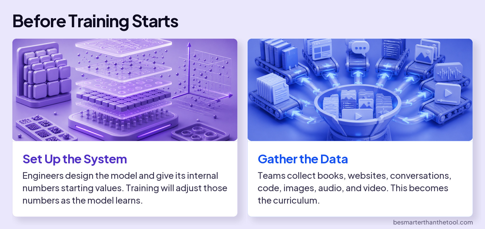

Understand AI
Training
AI can explain chemistry, write code, and help you improve an essay. How did it learn to do those things?
Think about learning to shoot a basketball. You take a shot, see where it goes, and adjust your next attempt. Practice gives you chances to improve.
AI training also uses repeated attempts and adjustments. But what changes inside an AI model?

Those internal numbers are called weights. Training changes them through repeated attempts and feedback.
Across the three phases of training, the basic loop stays the same: Predict. Check. Adjust. Repeat.
The Training Loop
1 Predict
The model predicts what comes next, whether it’s completing text or answering a request.
2 Check
The training system evaluates it using an example or feedback.
3 Adjust
The system changes the model’s weights to improve future predictions.
What changes between phases is the examples and feedback used to guide those adjustments. Here’s what that looks like in each phase.
Three Phases of Training
Follow one example in each phase. Select See It to reveal a change and its explanation together.
Better doesn’t always mean longer. Feedback can improve answers, but it doesn’t guarantee they’re correct.
Training ends. You start chatting.
During training, the model’s weights change.
During an ordinary chat, the model uses the weights it already has.
If you say, “Make that answer shorter,” it can use your instruction to change its next response. That doesn’t mean it has retrained itself. Your message gives it information to use in this conversation.